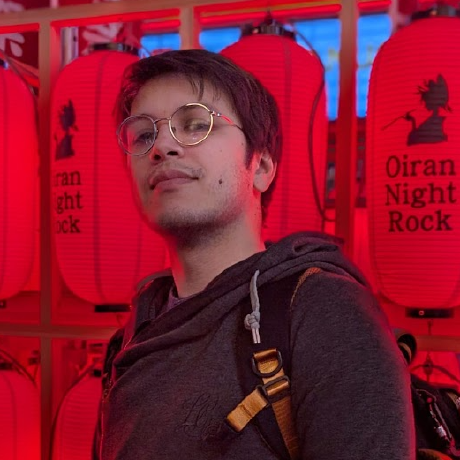

I'm am junior developer with knowledge of frontend and backend languages. I've got a penchant for learning and trying new things, and I'm ready to hit the ground running on a new project. I'm excited to get into the industry and start working on projects with likeminded teams and companies.
Check me out on LeWagonI've been in Japan for about 3 years now and I've been teaching English. I originally went to school for Computer Science a long time ago, however I never pursed it. Now I'm looking to get back into the field. As such I'm currently enrolled in the LeWagon Coding Camp set to graduate in March and I am excited to put these newfound skills to use.
I'm an avid reader and gamer. I enjoy science fiction novels and games and I am a big fan of tabletop board games. When the weather permits, I like to go to the beach and grill or go to the mountains and snowboard.